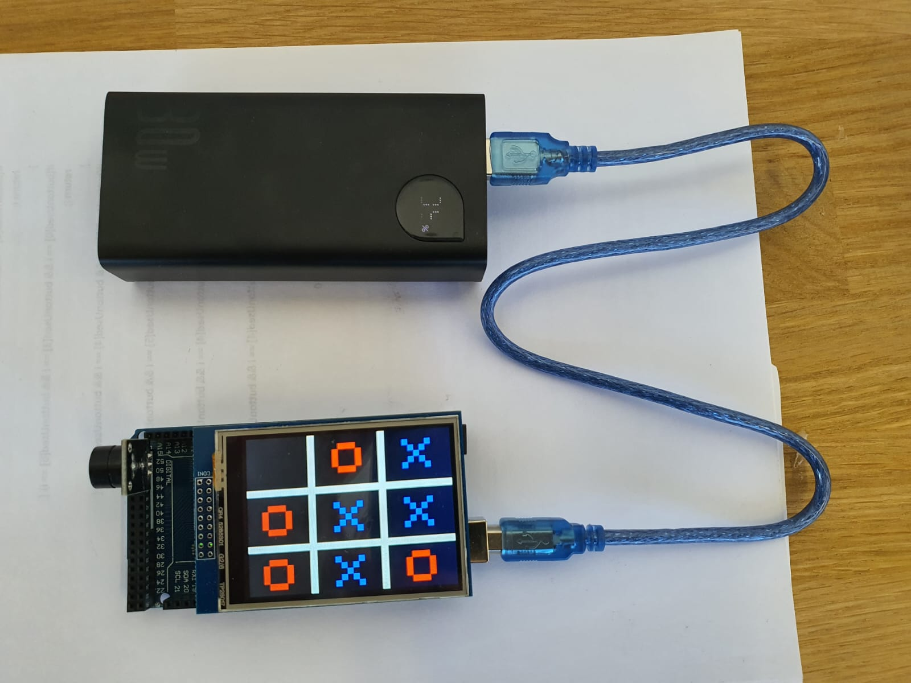
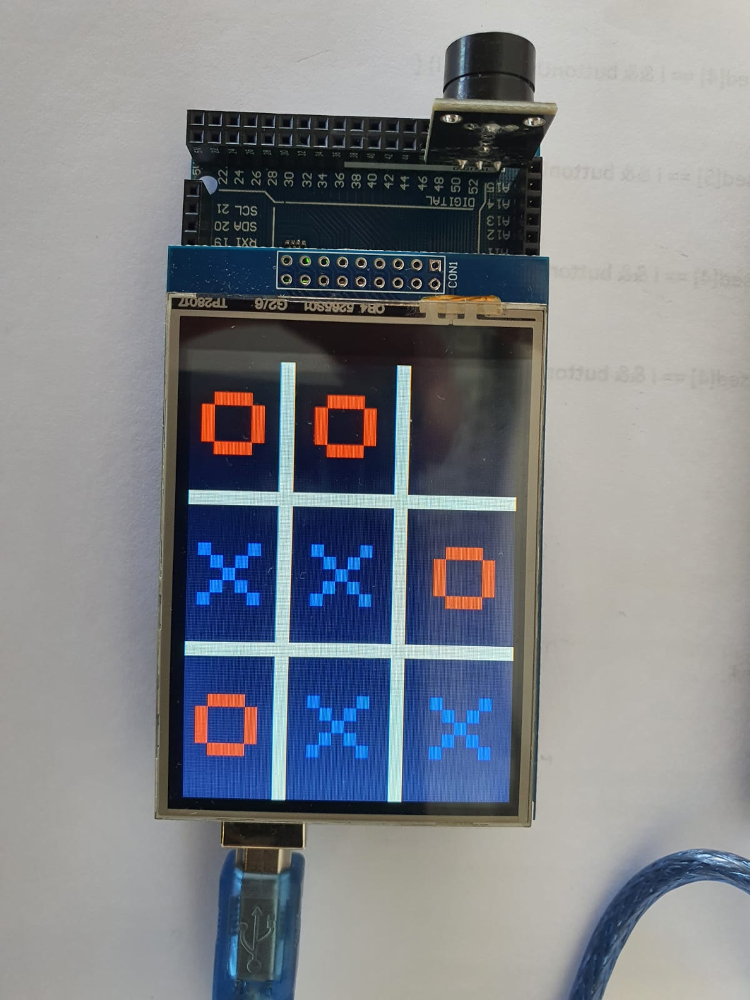

One tap, one move
Touch regions map to the board's nine squares.
Two-player Tic-Tac-Toe on a real touchscreen. Pick a square, hear the response, and race to make three in a row.

01 / THE BUILDBEHIND THE GAME
This familiar nine-square game takes shape as a physical device. The touchscreen displays the board and reads each player's choice. The sketch manages turns, ignores occupied squares, and checks for a win or a tie.
Every move gets its own sound. When a round ends, the result appears on the display and a melody plays before the next game begins.
Touch regions map to the board's nine squares.
X and O alternate while the code checks occupied squares and winning lines.
Buzzer tones mark each move, and the display announces a win or tie.
A CLOSER LOOK
A screen, a few components, and a game you can play away from a computer.

UNDER THE HOOD
Built for the Arduino Mega 2560, the sketch draws to a TFT display, reads touch input, and drives a buzzer.
Tap an empty square
The mark appears and a tone plays
The game checks for a win or tie
See the result, then play again
YOUR TURN
Try a small browser simulation of the game rules. Two players can pick squares in turn and aim for three in a row.
X's turn